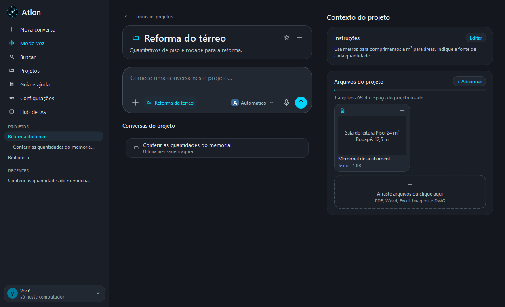

Seu projeto,
na conversa.
Fale ou escreva para o Atlon. Ele lembra das decisões do projeto e ajuda a transformar seus arquivos em documentos e planilhas.
Beta 1.10 · Grátis · Windows 10 ou 11 de 64 bits
Projetos na 1.10
Continue de onde parou.
Retome a última conversa ou planilha do projeto.
Instruções
“Use metros e inclua a unidade em cada coluna.” Salve essa orientação para as próximas conversas do projeto.
Memória
Esqueceu qual escala ficou combinada? Consulte a decisão, abra a conversa de origem e corrija o valor se o projeto mudou.
Planilhas
“Troque a área da sala para 22 m².” Peça a revisão no chat e abra a nova planilha. A versão anterior continua disponível.

Veja o Atlon em ação
Planta em PDF no AutoCAD
Voz e mapa de arquivos
Conheça o Atlon
Mapa de Arquivos
Grátis · Beta 1.10
Baixe para Windows
Windows 10 ou 11 de 64 bits · Sem cadastro para baixar
Quais contas posso conectar?
Escolha sua IA nas configurações e conecte Gmail, Drive ou Agenda para trabalhar com suas contas do Google.
Como começar?
Abra o Atlon e experimente o PDF de exemplo na própria conversa. Para usar a sua IA, abra Configurações.
O Windows mostrou um aviso. E agora?
É comum em programas novos sem assinatura digital. O guia em PDF mostra como resolver os avisos mais comuns, como “O Windows protegeu o computador” e o antivírus.
Como atualizo?
O Atlon avisa na barra do lado quando sai uma versão nova. Toque em Atualizar e ele instala por cima, mantendo suas conversas.
Preciso do AutoCAD ou do Revit?
Não. Eles só são necessários para mexer em desenhos. Conversas, projetos, planilhas e documentos funcionam sem eles.